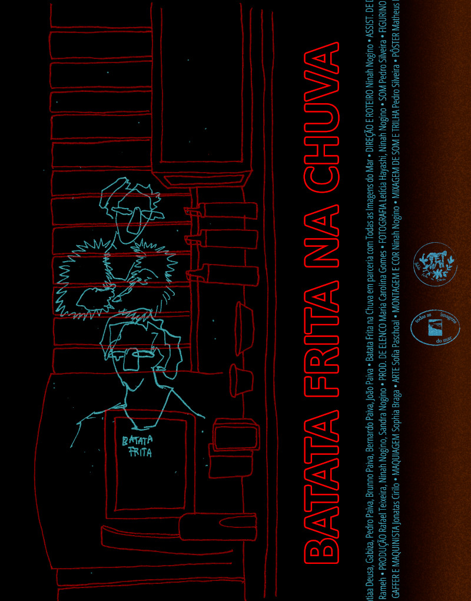
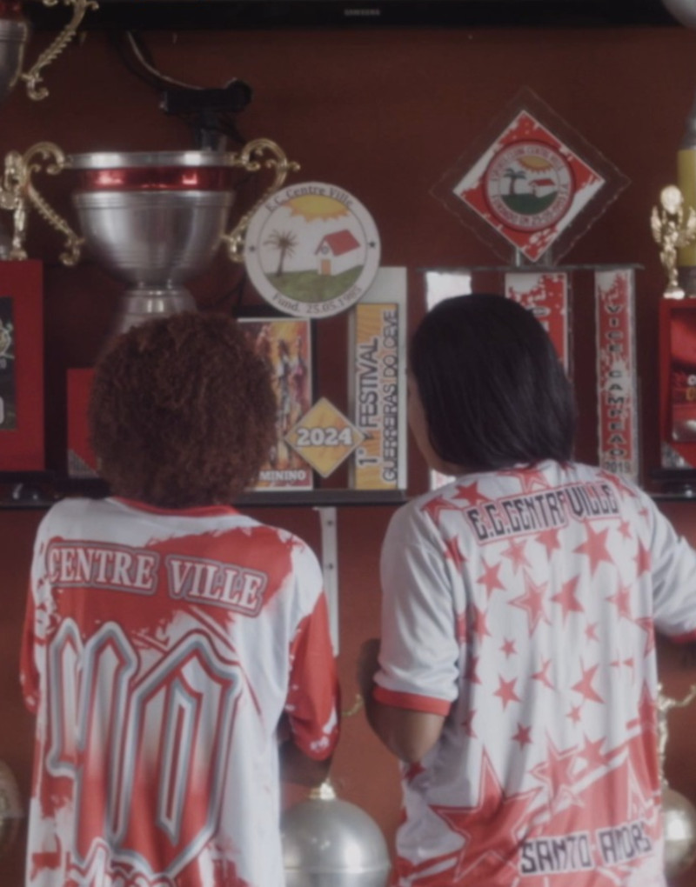
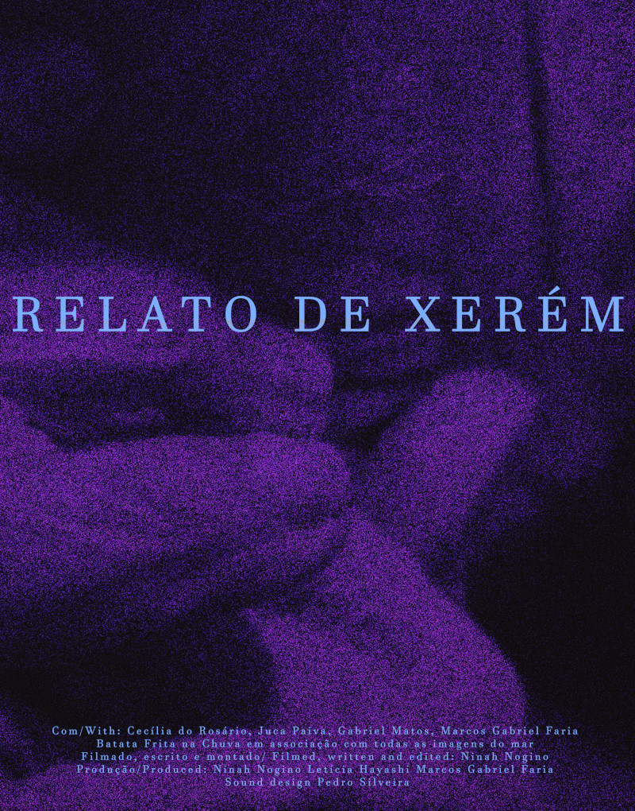
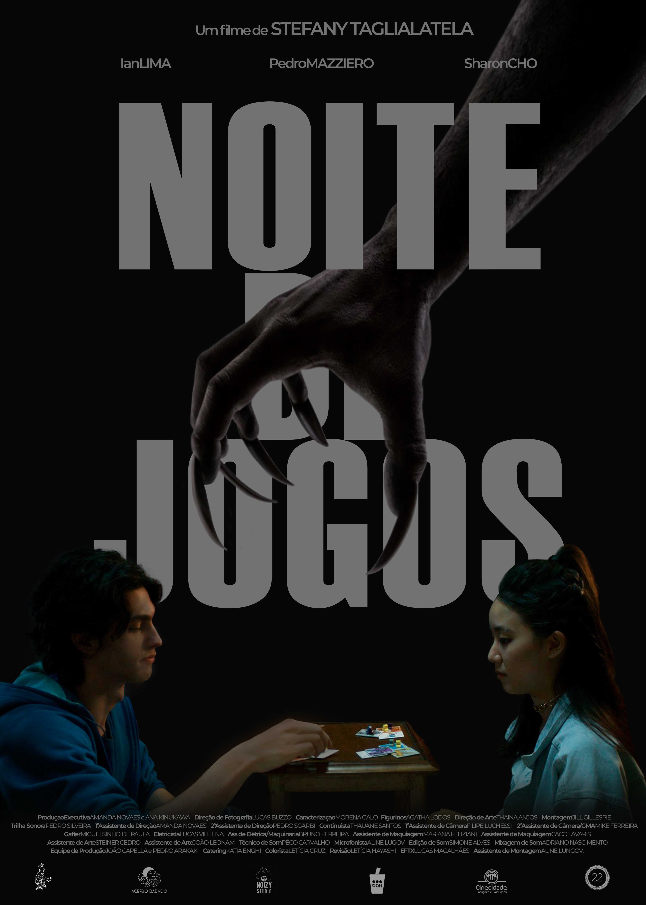
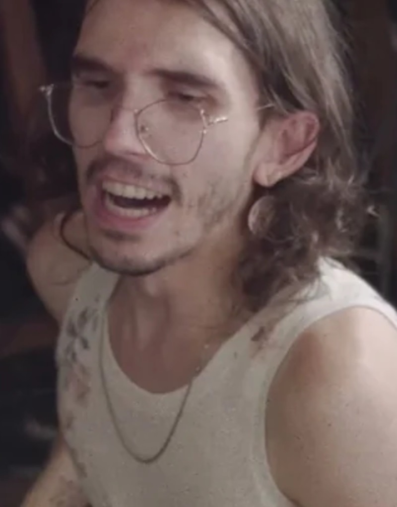
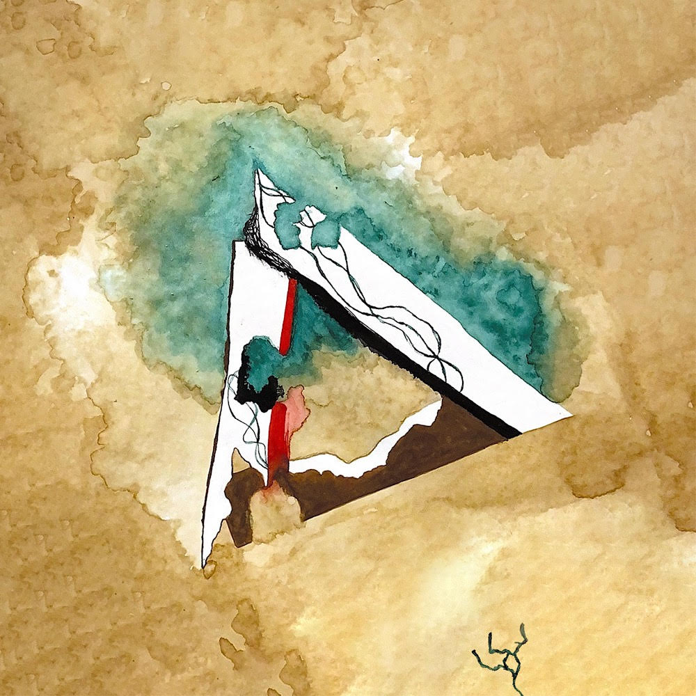

Batata Frita na Chuva
2025Dir. Ninah Nogino
Som direto · Desenho de som · Trilha sonora · Mixagem
Curta Cinema (BR) · Kurzfilmtage Oberhausen (DE)
Técnico de Som · Artista Sonoro · São Paulo, BR
Trabalho no encontro entre técnica e poética — gravação, mixagem, desenho de som e trilha para cinema independente e produção musical. Formado em ciência e tecnologia, com trajetória musical desde a infância.

Filmografia selecionada

Dir. Ninah Nogino
Som direto · Desenho de som · Trilha sonora · Mixagem
Curta Cinema (BR) · Kurzfilmtage Oberhausen (DE)

Dir. Beatriz Fontes
Desenho de som · Trilha sonora · Mixagem
Museu do Futebol — SP

Dir. Ninah Nogino
Desenho de som · Mixagem
Mostra Quem Quer Queer (BR) · Curt'Arruda (PT) · Ruídos Queer+ (BR)

Dir. Stefany Taglialatella
Trilha sonora original
Caruaru (BR) · Montevideo Fantastico (UY) · Valparaíso (CL) · Island of Horror (EUA)

Parafuso
Produção · Direção · Gravação · Mixagem
Produção musical selecionada

Nozes — Álbum
Composição · Arranjos · Gravação · Mixagem · Masterização

Pedro Silveira & Roberto Betini — Single
Composição · Arranjos · Gravação · Mixagem · Masterização


Roberto Betini — EP
Composição · Arranjos · Gravação · Mixagem · Masterização
Competências técnicas
Reaper · Logic Pro
Pro Tools · Audacity
Premiere Pro
DaVinci Resolve
Experiência profissional
Acústica Studios · São Caetano do Sul, SP
Assistente de gravações e ensaios em sessões com bandas de pequeno a grande porte: microfonação, montagem e suporte ao produtor residente. Operação de som, monitoramento.
Festival Rock The Mountain · Petrópolis, RJ
Suporte técnico em festival de grande porte: montagem, operação e desmontagem de equipamentos de palco.
Experiência administrativa
XP Educação
Pearson Education
Formação
Idiomas